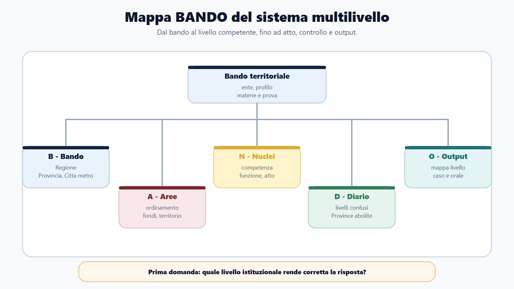
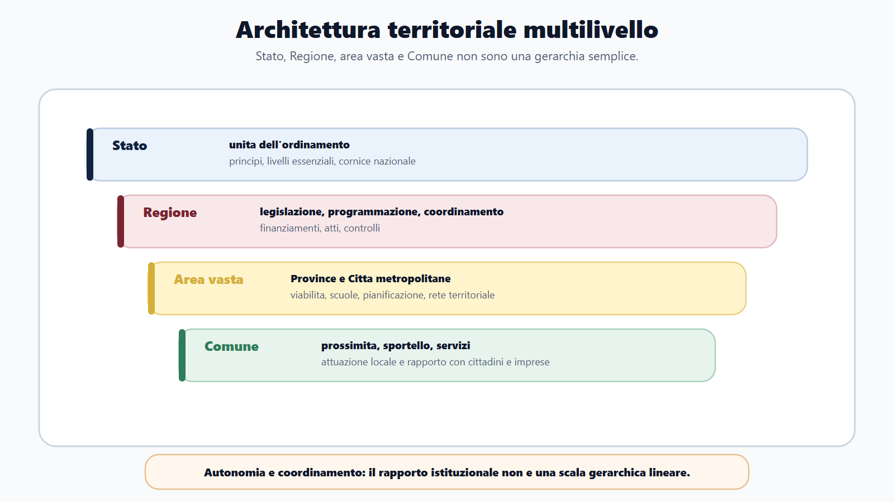
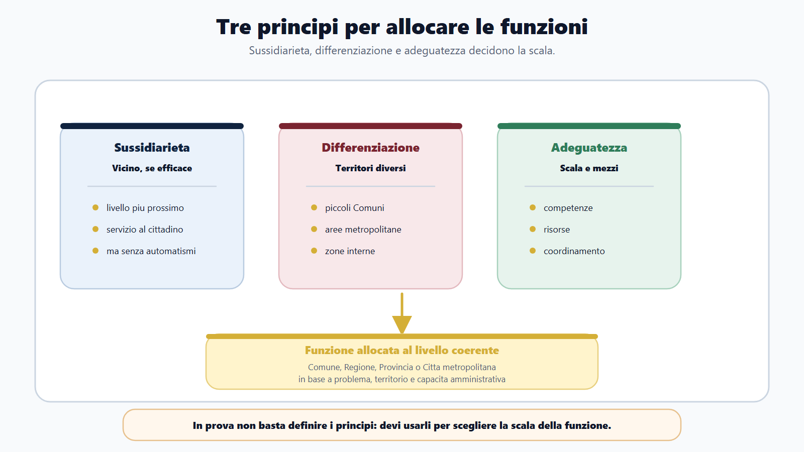
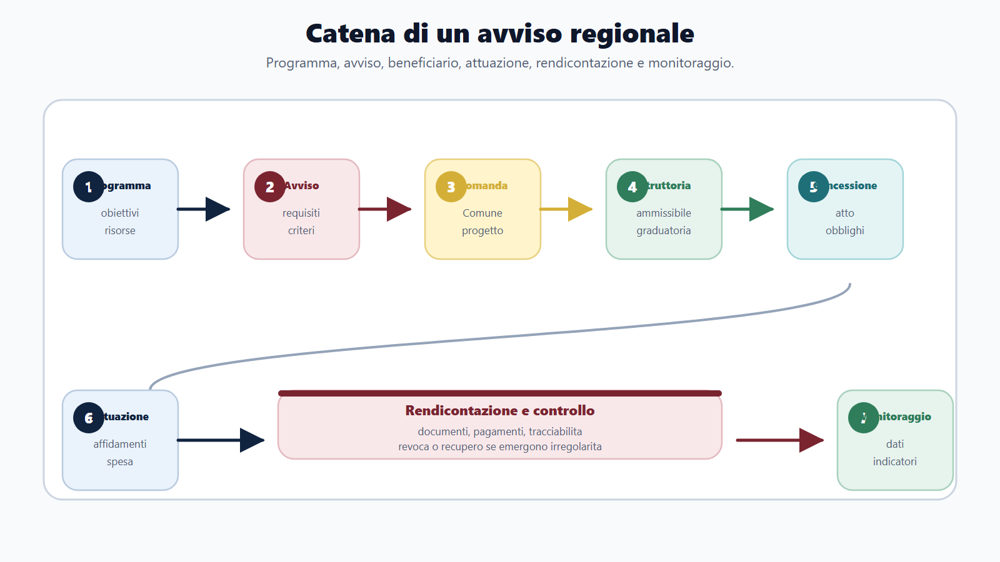
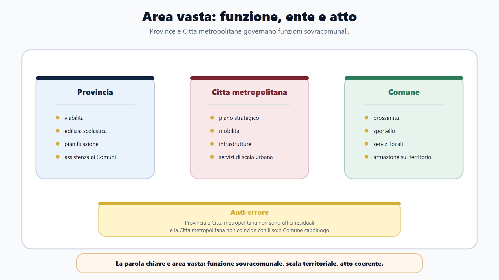

VOL-02 · Capitolo 18
M-FL02
Il sistema territoriale
multilivello
Non un ente, ma un sistema: chi decide, chi programma, chi gestisce, chi finanzia, chi controlla, chi attua.
01 · Il problema in prova
Una mappa, non un ente unico
Nei bandi la parola «ente locale» compare come se indicasse un soggetto solo. È fuorviante quando il programma comprende Regioni, Province e Città metropolitane. Si studia un sistema: livelli di governo con autonomie, funzioni, organi, atti e responsabilità differenti. La Regione non è un Comune più grande. La Provincia non è un residuo. La Città metropolitana non è il capoluogo. Il Comune resta il punto in cui molte politiche diventano servizio.
Che cos’è il sistema multilivello
Organizzazione della Repubblica attraverso Stato, Regioni, Province, Città metropolitane e Comuni. Non è una piramide di uffici. Ogni ente opera nella Costituzione, nelle leggi e nei controlli previsti.
A che serve in prova
A non rispondere «provvede l’ente locale». La sequenza corretta è livello istituzionale, funzione, atto, soggetti coinvolti, controllo. Senza questa griglia, fondi, PNRR e area vasta diventano definizioni vuote.
Ogni volta che nomini un ente, aggiungi la funzione e la fonte.
Se non riesci a completare la frase, la qualificazione è ancora troppo generica per sostenere una risposta concorsuale. Autonomia non è indipendenza; coordinamento non è gerarchia.
02 · BANDO
Cinque decisioni su questo capitolo
Il capitolo è di orientamento. Ogni materia del modulo va letta con la stessa griglia: livello, competenza, altri enti, atto, tipo di prova.
| Che cosa fai | Se la salti | |
|---|---|---|
| B — Bando | Cerca Regione, Provincia, Città metropolitana, ordinamento regionale, area vasta. | Studi un ente isolato, non la rete. |
| A — Aree | Collega ordinamento, area vasta, fondi, PNRR, territorio, servizi, bilancio. | Tratti ogni materia come definizione isolata. |
| N — Nuclei | Autonomia, competenza, funzione, organo, procedimento, programmazione, controllo. | Confondi il nome dell’ente con la titolarità della funzione. |
| D — Diario | Segna «Province abolite», Regione = Comune più grande, metropolitana = capoluogo. | Ripeti le tre trappole all’orale. |
| O — Output | Mappa livello-funzione-atto, caso di competenza, risposta orale, check-list istruttoria. | Elenco di organi senza decisione. |
03 · Schema
Dal bando alla mappa dei livelli
Prima di studiare organi e fondi, fissi la griglia del capitolo: che cosa chiede il bando, a quale livello sta la funzione, quale atto la rende operativa. Lo schema non sostituisce la fonte: serve a non partire dal nome dell’ente.

Bando, livelli, funzione, atto: la sequenza da tenere ferma in ogni traccia territoriale.
03 · Cornice costituzionale
La Repubblica è composta, non piramidale
Comuni, Province, Città metropolitane, Regioni e Stato partecipano all’organizzazione della Repubblica secondo le rispettive competenze. Non tutto ciò che accade sul territorio è comunale: un servizio può essere erogato dal Comune, programmato dalla Regione, finanziato da un programma europeo e controllato in sede contabile.
| Parola | Che cos’è | Errore se le confondi |
|---|---|---|
| Ente territoriale | Comunità su un territorio, con autonomia riconosciuta. | Lo riduci a un ufficio. |
| Livello di governo | Posizione da cui si assumono decisioni: nazionale, regionale, di area vasta, comunale. | Assegni a un livello ciò che spetta a un altro. |
| Ufficio | Articolazione organizzativa. Non possiede tutte le competenze dell’ente. | Attribuisci all’ufficio i poteri dell’organo. |
| Funzione e competenza | La funzione è il compito; la competenza indica chi può esercitarlo. | Rispondi «chi è competente?» senza precisare: a programmare, ad attuare o a controllare? |
Nel quiz evita «sempre» e «soltanto» se la fonte non li giustifica. Nell’orale parti dalla cornice e passa alle differenze operative. Nel caso costruisci cinque colonne: livello, funzione, soggetto, atto, controllo.
04 · Architettura
Quattro scale, rapporti istituzionali
I livelli non sono uffici della stessa amministrazione. La Regione non «comanda» sempre sui Comuni; la Provincia non è un piano gerarchico intermedio. La legge prevede competenze, conferenze, programmi, finanziamenti, accordi e controlli. La relazione è istituzionale.
Una politica per riqualificare servizi in piccoli Comuni può essere programmata e finanziata dalla Regione, attuata dai Comuni, coordinata a livello sovracomunale e controllata secondo l’avviso. I compiti stanno in un procedimento unitario: non nasce per questo una gerarchia generale.
Stato, Regione, area vasta e Comune: autonomie coordinate, non una piramide.

05 · Principi
Sussidiarietà, differenziazione, adeguatezza
I tre principi spiegano perché una funzione è collocata a un livello anziché a un altro. Non sono una sequenza da recitare. Vanno letti insieme: la vicinanza senza capacità produce una funzione inefficace; la capacità senza attenzione alle differenze genera una soluzione uniforme ma sbagliata.
Sussidiarietà
Quale livello più vicino può agire con efficacia? Non è un automatismo comunale: reti, bacini e standard possono richiedere una scala più ampia.
Differenziazione
I territori non sono uguali. Montagna, metropoli, piccoli Comuni e zone interne non hanno gli stessi fabbisogni organizzativi.
Adeguatezza
L’ente ha scala, mezzi e competenze per quella funzione? Se no, si cambia livello, si associa la gestione o si chiede supporto.
Un servizio locale può restare comunale e tuttavia essere finanziato da un programma regionale. La viabilità provinciale o la pianificazione di area vasta non si riducono al singolo Comune: l’adeguatezza sposta la scala.
06 · Applicazione
I tre principi scelgono la scala
In una risposta orale il criterio va esposto, applicato ai fatti e motivato. La formula «si applica la sussidiarietà» è insufficiente se non spiega perché il livello scelto è proporzionato alla funzione.

I tre principi decidono la scala della funzione, non una formula da recitare.
07 · I livelli
Cinque ruoli, cinque scale
La tabella orienta lo studio dei capitoli successivi. Non sostituisce la fonte. In prova, per ogni riga, chiediti quale atto rende visibile quella funzione.
| Livello | Ruolo nel sistema | Che cosa guardare in prova |
|---|---|---|
| Stato | Unità dell’ordinamento, principi, livelli essenziali, funzioni riservate. | Riparto, poteri sostitutivi, vincoli finanziari, normativa nazionale. |
| Regione | Legifera, programma, coordina, finanzia, amministra e controlla. | Statuto, organi, leggi, delibere, piani, avvisi, rapporti con gli enti locali. |
| Provincia | Ente di area vasta dopo la L. 56/2014: reti e supporto ai Comuni. | Viabilità, edilizia scolastica, pianificazione, assistenza tecnica. |
| Città metropolitana | Area vasta delle grandi aree urbane, con vocazione strategica. | Piano strategico, mobilità, infrastrutture, coordinamento metropolitano. |
| Comune | Prossimità: comunità locale e servizi rivolti a cittadini e imprese. | Attuazione, sportelli, atti gestionali, rapporto con gli utenti. |
08 · La Regione
Cinque capacità, non un solo atto
La Regione unisce più dimensioni: ente territoriale autonomo, legislatore nelle materie previste, programmatore, amministrazione, soggetto finanziario e di coordinamento. Ridurla al Consiglio o alla Giunta porta fuori strada. La formula «la Regione approva» è quasi sempre troppo povera.
| Capacità | Domanda operativa | Manifestazione |
|---|---|---|
| Legislativa | La materia consente un intervento normativo regionale? | Legge regionale, entro il riparto costituzionale. |
| Programmatoria | Quali obiettivi, territori e risultati vengono ordinati? | Piano, programma, indirizzi, criteri generali. |
| Amministrativa | Quale procedimento produce effetti concreti? | Avviso, autorizzazione, concessione, controllo. |
| Di coordinamento | Quali enti devono agire in modo coerente? | Accordo, conferenza, assistenza, flusso informativo. |
| Finanziaria | Quali risorse e con quali vincoli? | Stanziamento, contributo, trasferimento, rendicontazione. |
Assegnare automaticamente un atto alla Giunta o al dirigente. Prima la fonte, poi la funzione, poi la distinzione tra indirizzo e gestione. Disciplinare una materia non significa erogare ogni servizio.
09 · Catena dell’avviso
Dal programma regionale al Comune
Una Regione approva un programma di finanziamento per interventi comunali. Se vedi solo «contributo», perdi il sistema. Ogni anello ha un atto, un soggetto e un controllo.
| Passaggio | Livello |
|---|---|
| Programmazione e avviso | Regione: obiettivi, criteri, requisiti, spese, termini. |
| Domanda e attuazione | Comune: progetto, spesa, rendicontazione. Eventuale CUP se investimento. |
| Istruttoria e concessione | Regione: ammissibilità, graduatoria, obblighi del beneficiario. |
| Monitoraggio | Regione: avanzamento, indicatori, risultati. Senza questo anello la catena è incompleta. |
Dall’indirizzo regionale all’attuazione comunale: ogni anello ha un atto.

10 · Area vasta
Le Province non sono abolite
La L. 56/2014 ha riformato assetto, organi e funzioni. Le Province restano enti territoriali di area vasta. La Città metropolitana non coincide con il Comune capoluogo: governa una dimensione urbana in cui mobilità, infrastrutture e pianificazione superano un solo confine comunale. «Area vasta» indica la scala della funzione, non un livello gerarchico intermedio.
| Indizio | Domanda |
|---|---|
| Rete stradale o edilizia scolastica superiore | Quale funzione è attribuita all’ente di area vasta? |
| Mobilità di più Comuni | Quale pianificazione coordina flussi e infrastrutture? |
| Assistenza tecnica ai Comuni | Quale base disciplina il supporto, senza subordinazione? |
Area vasta è la scala della funzione sovracomunale, non un piano gerarchico.

11 · Il Comune nella catena
Quattro ruoli, non uno sportello
M-FL02 non è il modulo sui Comuni, ma il Comune resta sempre presente. Cambia il punto di osservazione: in M-FL01 guardi il procedimento dall’interno dell’ufficio; qui lo guardi dentro programma regionale, piano di area vasta, finanziamento e controllo. Lo stesso ente può assumere più ruoli nella medesima politica.
| Ruolo | Che cosa fa | Controllo essenziale |
|---|---|---|
| Prossimità | Organizza servizi e procedimenti rivolti alla comunità. | Qualità, continuità, tutela degli utenti. |
| Beneficiario | Riceve risorse su programma o avviso: domanda, requisiti, obblighi. | Ammissibilità e condizioni della misura. |
| Attuatore | Realizza l’intervento e documenta avanzamento e spesa. | Tempi, obblighi, tracciabilità. |
| Interlocutore | Partecipa a pianificazione, accordi e coordinamento. | Impegni e tracciabilità delle decisioni. |
Autonomia e vincolo coesistono. Il Comune può gestire l’intervento e, nello stesso tempo, essere vincolato a obiettivi, criteri e obblighi della risorsa ricevuta. Non è un destinatario passivo né un ufficio regionale.
12 · Decoder
Cinque domande sul bando
Il bando decide la priorità di studio. Una Regione, una Provincia e una Città metropolitana non generano lo stesso programma. Compila la scheda con parole ricavate dal testo, non con etichette generiche.
Indica la scala della funzione, gli atti più probabili e gli esempi da preparare.
Amministrativo, legislativo, tecnico territoriale, fondi UE o PNRR: nucleo comune, punteggio diverso.
Ordinamento, programmazione, fondi, contratti, viabilità, edilizia scolastica: trasformale in procedimenti e casi.
Quiz, orale, caso, determina, nota. Ogni funzione che supera un confine chiede la catena dei soggetti.
13 · Caso guidato
Avviso regionale ai Comuni
Una Regione finanzia interventi comunali di riqualificazione di servizi territoriali. La risposta debole dice: «pubblica il bando, fa la graduatoria, eroga». Non mostra il sistema. Non inventare norme: ordina il procedimento secondo livello, funzione, atto e controllo.
| Passaggio | Livello | Attenzione concorsuale |
|---|---|---|
| Programmazione e avviso | Regione | Coerenza con piano, risorse, obiettivi, requisiti, spese ammissibili, termini. |
| Domanda | Comune | Progetto, quadro economico, dichiarazioni, eventuale CUP se investimento. |
| Istruttoria e concessione | Regione | Ammissibilità, valutazione, graduatoria, motivazione, obblighi del beneficiario. |
| Attuazione e rendicontazione | Comune e Regione | Realizzazione, tracciabilità, documenti di spesa, eventuali revoche o recuperi. |
| Monitoraggio | Regione | Avanzamento, indicatori, dati e relazione sui risultati. |
14 · Verifica
Due domande da saper spiegare
Che cos’è il sistema territoriale multilivello?
Organizzazione della Repubblica attraverso livelli autonomi coordinati dall’ordinamento. Competenze legislative, funzioni amministrative, programmazione, gestione e controlli sono distribuiti. La Regione può programmare e finanziare; l’area vasta coordina funzioni sovracomunali; il Comune attua o gestisce il servizio. I tre principi aiutano a scegliere il livello adatto.
Le Province sono state abolite?
No. La L. 56/2014 ne ha riordinato assetto e funzioni senza eliminarle. Restano enti di area vasta, con rilievo in viabilità, edilizia scolastica, pianificazione e assistenza ai Comuni, secondo la disciplina applicabile. La presenza di una Città metropolitana non autorizza generalizzazioni su tutte le Province.
Usare «ente locale» come categoria unica. Così si attribuiscono al Comune funzioni regionali o di area vasta, si immagina una gerarchia impropria e si riduce una traccia su fondi o PNRR a un procedimento generico.
15 · Mini-esercizio
Associa la traccia al livello da verificare
Non cercare una risposta unica. Spiega il motivo e indica l’atto che controlleresti. Aggiungi un rischio istruttorio: competenza non chiara, copertura finanziaria, documenti incompleti, dati di monitoraggio assenti.
| Traccia | Livello prevalente | Atto o output |
|---|---|---|
| Avviso per contributi regionali ai Comuni su servizi territoriali | Regione, con Comuni beneficiari | Avviso, graduatoria, concessione, check-list di rendicontazione |
| Piano di manutenzione della rete stradale provinciale | Provincia | Programma, determina, affidamento, cronoprogramma, controllo esecuzione |
| Intervento di mobilità su più Comuni di una grande area urbana | Città metropolitana, con Comuni e Regione | Piano, accordo, delibera, schema soggetti-competenze |
| Apertura di uno sportello per i residenti di un solo Comune | Comune, salvo gestione associata | Regolamento, determina, organizzazione del servizio |
16 · Da tenere ferme
Cinque regole, con il perché
1. Stato, Regioni, Province, Città metropolitane e Comuni non sono uffici di una gerarchia semplice: sono livelli autonomi coordinati dall’ordinamento.
2. Le funzioni si allocano con sussidiarietà, differenziazione e adeguatezza, applicate a un caso, non recitate.
3. La Regione legifera, programma, amministra, coordina e finanzia; l’area vasta copre funzioni sovracomunali. Le Province non sono abolite.
4. Il Comune resta prossimità e attuazione: beneficiario, attuatore, interlocutore, non solo sportello.
5. Ogni materia M-FL02 deve diventare mappa livello-funzione-atto, con controllo o rendicontazione.
Prossimo capitolo
Statuti, organi e organizzazione regionale
La mappa dei livelli è pronta. Il capitolo successivo entra nella Regione: fonte, organo, competenza, atto.